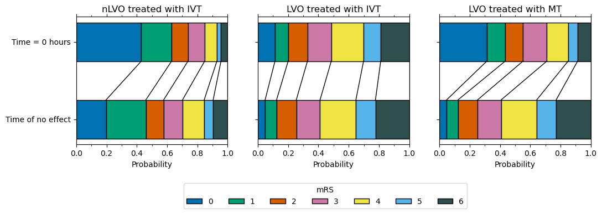
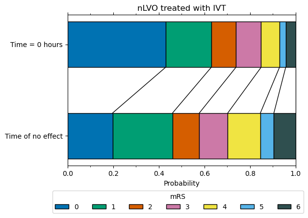
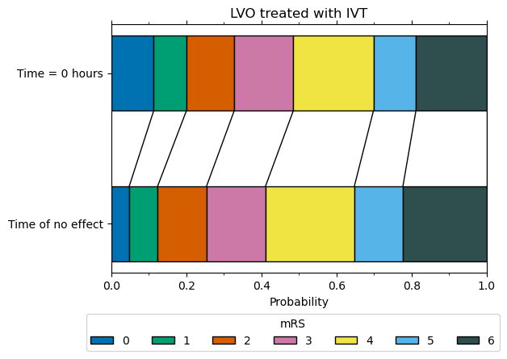
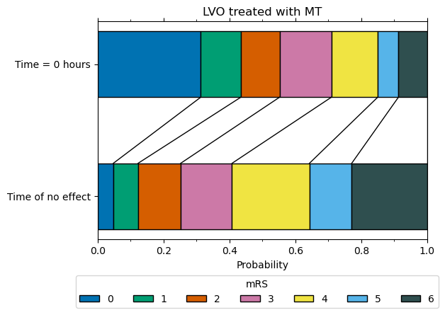

Show all results#
all_distributions_bins_df = pd.DataFrame(all_distributions_bins).T
all_distributions_bins_df.to_csv(
'./outcome_utilities/mrs_dist_probs_bins.csv', index_label='Stroke type')
all_distributions_bins_df
| 0 | 1 | 2 | 3 | 4 | 5 | 6 | |
|---|---|---|---|---|---|---|---|
| pre_stroke_nlvo | 0.5829 | 0.1625 | 0.1034 | 0.1022 | 0.0420 | 0.0069 | 0.0000 |
| pre_stroke_nlvo_ivt_deaths | 0.5765 | 0.1608 | 0.1023 | 0.1011 | 0.0415 | 0.0069 | 0.0110 |
| pre_stroke_lvo | 0.4179 | 0.1430 | 0.1184 | 0.1642 | 0.1138 | 0.0427 | 0.0000 |
| pre_stroke_lvo_ivt_deaths | 0.4036 | 0.1381 | 0.1144 | 0.1586 | 0.1099 | 0.0413 | 0.0341 |
| pre_stroke_lvo_mt_deaths | 0.4012 | 0.1372 | 0.1137 | 0.1576 | 0.1092 | 0.0410 | 0.0400 |
| no_treatment_nlvo | 0.1971 | 0.2629 | 0.1200 | 0.1277 | 0.1479 | 0.0620 | 0.0823 |
| no_effect_nlvo_ivt_deaths | 0.1973 | 0.2627 | 0.1176 | 0.1247 | 0.1430 | 0.0592 | 0.0955 |
| t0_treatment_nlvo_ivt | 0.4298 | 0.2002 | 0.1082 | 0.1102 | 0.0808 | 0.0271 | 0.0437 |
| no_treatment_lvo | 0.0500 | 0.0790 | 0.1360 | 0.1640 | 0.2470 | 0.1350 | 0.1890 |
| no_effect_lvo_ivt_deaths | 0.0479 | 0.0757 | 0.1303 | 0.1571 | 0.2366 | 0.1293 | 0.2231 |
| no_effect_lvo_mt_deaths | 0.0475 | 0.0751 | 0.1293 | 0.1559 | 0.2348 | 0.1283 | 0.2290 |
| t0_treatment_lvo_ivt | 0.1129 | 0.0871 | 0.1274 | 0.1574 | 0.2135 | 0.1132 | 0.1886 |
| t0_treatment_lvo_mt | 0.3128 | 0.1217 | 0.1176 | 0.1572 | 0.1406 | 0.0629 | 0.0872 |
all_distributions_cumsum_df = pd.DataFrame(all_distributions_cumsum).T
all_distributions_cumsum_df.to_csv(
'./outcome_utilities/mrs_dist_probs_cumsum.csv', index_label='Stroke type')
all_distributions_cumsum_df
| 0 | 1 | 2 | 3 | 4 | 5 | 6 | |
|---|---|---|---|---|---|---|---|
| pre_stroke_nlvo | 0.5829 | 0.7454 | 0.8489 | 0.9511 | 0.9931 | 1.0000 | 1.0 |
| pre_stroke_nlvo_ivt_deaths | 0.5765 | 0.7372 | 0.8395 | 0.9406 | 0.9821 | 0.9890 | 1.0 |
| pre_stroke_lvo | 0.4179 | 0.5609 | 0.6793 | 0.8435 | 0.9573 | 1.0000 | 1.0 |
| pre_stroke_lvo_ivt_deaths | 0.4036 | 0.5417 | 0.6561 | 0.8147 | 0.9246 | 0.9659 | 1.0 |
| pre_stroke_lvo_mt_deaths | 0.4012 | 0.5384 | 0.6521 | 0.8098 | 0.9190 | 0.9600 | 1.0 |
| no_treatment_nlvo | 0.1971 | 0.4600 | 0.5800 | 0.7078 | 0.8557 | 0.9177 | 1.0 |
| no_effect_nlvo_ivt_deaths | 0.1973 | 0.4600 | 0.5776 | 0.7023 | 0.8452 | 0.9045 | 1.0 |
| t0_treatment_nlvo_ivt | 0.4298 | 0.6300 | 0.7382 | 0.8484 | 0.9292 | 0.9563 | 1.0 |
| no_treatment_lvo | 0.0500 | 0.1290 | 0.2650 | 0.4290 | 0.6760 | 0.8110 | 1.0 |
| no_effect_lvo_ivt_deaths | 0.0479 | 0.1236 | 0.2539 | 0.4110 | 0.6476 | 0.7769 | 1.0 |
| no_effect_lvo_mt_deaths | 0.0475 | 0.1226 | 0.2519 | 0.4078 | 0.6427 | 0.7710 | 1.0 |
| t0_treatment_lvo_ivt | 0.1129 | 0.2000 | 0.3274 | 0.4848 | 0.6982 | 0.8114 | 1.0 |
| t0_treatment_lvo_mt | 0.3128 | 0.4345 | 0.5521 | 0.7093 | 0.8499 | 0.9127 | 1.0 |
Plot distributions#
from outcome_utilities.dist_plot import draw_horizontal_bar, \
draw_connections
Define plot colour scheme
plt.style.use('seaborn-colorblind')
/tmp/ipykernel_34593/1159425588.py:1: MatplotlibDeprecationWarning: The seaborn styles shipped by Matplotlib are deprecated since 3.6, as they no longer correspond to the styles shipped by seaborn. However, they will remain available as 'seaborn-v0_8-<style>'. Alternatively, directly use the seaborn API instead.
plt.style.use('seaborn-colorblind')
all_distributions_bins_df.loc['t0_treatment_lvo_ivt']
0 0.1129
1 0.0871
2 0.1274
3 0.1574
4 0.2135
5 0.1132
6 0.1886
Name: t0_treatment_lvo_ivt, dtype: float64
plot_info = [
[all_distributions_bins_df.loc['no_effect_nlvo_ivt_deaths'],
all_distributions_bins_df.loc['t0_treatment_nlvo_ivt'],
'nLVO treated with IVT'],
[all_distributions_bins_df.loc['no_effect_lvo_ivt_deaths'],
all_distributions_bins_df.loc['t0_treatment_lvo_ivt'],
'LVO treated with IVT'],
[all_distributions_bins_df.loc['no_effect_lvo_mt_deaths'],
all_distributions_bins_df.loc['t0_treatment_lvo_mt'],
'LVO treated with MT']
]
fig, axs = plt.subplots(1,3, figsize=(12,3), gridspec_kw={'wspace':0.2})
y_vals = [1, 0]
for i,info in enumerate(plot_info):
ylabel_top = 'Time = 0 hours' if i<1 else ' '
ylabel_bottom = 'Time of no effect' if i<1 else ' '
y_labels = [ylabel_top, ylabel_bottom]
ax = axs[i]
# Draw no effect distribution
draw_horizontal_bar(info[0], y=y_vals[1], ax=ax)
if i<1:
# Add legend now to prevent doubling all the labels:
fig.legend(loc='upper center',ncol=7, title='mRS',
bbox_to_anchor=[0.5,-0.1]) # Legend below axis.
# Draww t=0 distribution
draw_horizontal_bar(info[1], y=y_vals[0], ax=ax)
# Darw connecting lines
draw_connections(info[1], info[0], ax=ax)
# Add general content
label = info[2]
ax.set_xlabel('Probability')
ax.set_title(label)
ax.set_xlim(0,1)
ax.set_xticks(np.arange(0.0,1.01,0.1), minor=True)
ax.tick_params(top=True, which='both')
ax.set_yticks(y_vals)
ax.set_yticklabels(y_labels)
plt.savefig(f'./images/dist_bars.jpg', dpi=300, bbox_inches='tight')
plt.show()

Plot individual plots
for i,info in enumerate(plot_info):
fig, ax = plt.subplots(1,1, figsize=(6,4), gridspec_kw={'wspace':0.2})
y_vals = [1, 0]
ylabel_top = 'Time = 0 hours'
ylabel_bottom = 'Time of no effect'
y_labels = [ylabel_top, ylabel_bottom]
# Draw no effect distribution
draw_horizontal_bar(info[0], y=y_vals[1], ax=ax)
fig.legend(loc='upper center',ncol=7, title='mRS',
bbox_to_anchor=[0.5,-0.0]) # Legend below axis.
# Draww t=0 distribution
draw_horizontal_bar(info[1], y=y_vals[0], ax=ax)
# Darw connecting lines
draw_connections(info[1], info[0], ax=ax)
# Add general content
label = info[2]
ax.set_xlabel('Probability')
ax.set_title(label)
ax.set_xlim(0,1)
ax.set_xticks(np.arange(0.0,1.01,0.1), minor=True)
ax.tick_params(top=True, which='both')
ax.set_yticks(y_vals)
ax.set_yticklabels(y_labels)
label = label.replace(' ', '_')
plt.savefig(f'./images/dist_bars_{label}.jpg', dpi=300, bbox_inches='tight')
plt.show()


